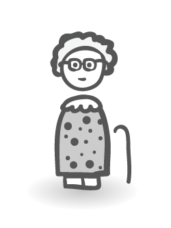
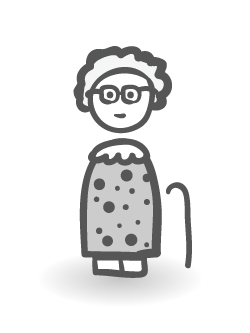
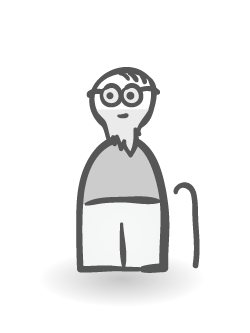
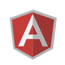
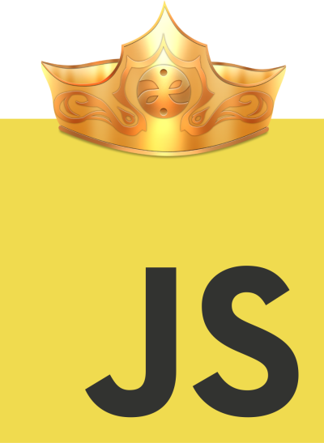
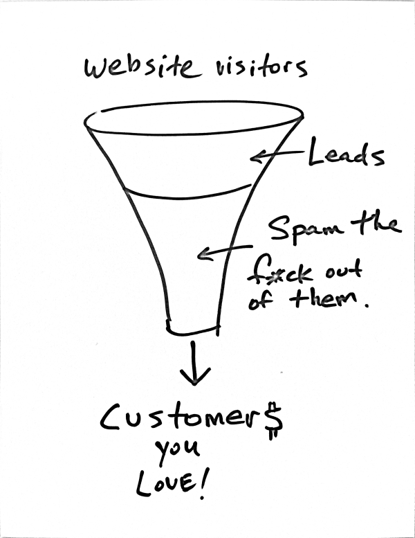
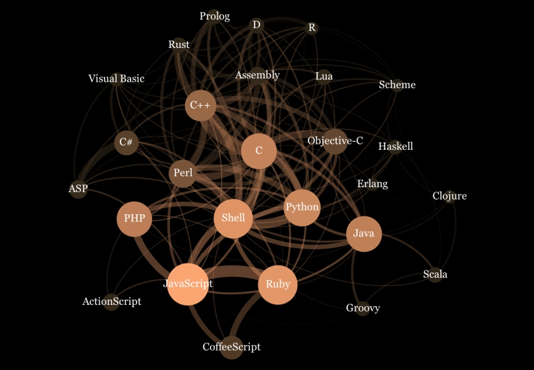

Open source <3
- Une grosse partie du projet sera OS
- Axe strategique avantageux par rapport au concurrents
- 3 avantages
- mieux toucher notre cible
- communication / marketing
- developpment produit
La cible
- Bien comprendre le geek
- C'est lui qui prend la decision d'utiliser un outil
g33k + 1337 = 42

- La cultures geek
- Animal curieux, inventif et passione
- Coller a ses besoins
- Outil / API sexy
- Aisance d'utilisation
- Plaisir a utiliser l'outil pour l'integrer dans son workflow
- Profiter de son inventivite


 




- Animal social
- Utilise beaucoup Github / Twitter / ... pour s'informer
- Reseau maille de geeks
- Influenceurs, suiveurs, beaucoup d'early adopters
- Present sur ces reseaux et de comprendre comment ils les utilisent
- Profiter de la viralite



- Culturel, OS tres present dans le Web
- Stack LVL 100% OS
- Si on veut s'ajouter au paysage il faut avoir une presence dans l'open source
Communication & Marketing
- L'OS en 2014 est viral
- Plus IRC, mailing lists
- Suivi la revolution du Web 2.0
- S'accorde bien avec l'evolution des usages Internet



- 1M+ JavaScript repo
- Github archives + Google Big Query
- http://adambard.com/blog/top-github-languages-for-2013-so-far/
- De maniere plus large, techno-centric
- Package manager = app store version gratuite
- npm, nodejs, javascript
- http://caines.ca/blog/programming/the-node-js-community-is-quietly-changing-the-face-of-open-source/


De Ben Chestnut, Mailchimp
Gauche
suivent des dogmes, des vieilles pratiques
beaucoup d'argent
Droite
reflechissent, nouveau market
beaucoup de travail
- http://tinyletter.com/ben/letters/why-i-hate-funnels
HTML5 ★ BOILERPLATE
Paul Irish 9.4k 99k
Chris Coyer 2.4k 94k
Addy Osmani 5.8k 50k
Lea Verou 3.3k 40k
Mathias Bynens 1.4k 16k
Sindre Sorhus 1.5k 10k
Nicolas Callagher 2.2k 17k
Divya Manian 1k 16k
Avantages produit
Fill the gap

- Tres peu de solution viable pour node.js
- Remplir un trou dans Node
- Lier natif et node
- Proposer une API de manipulation en JS
- http://www.igvita.com/slides/2012/bigquery-github-strata.pdf
ribs
Stabilite
Qualite
Extensibilite
Personnalisation
Les risques?
 IP
Perte
Concurrence
IP
Perte
Concurrence
- IP: Licenses
- Concurrence: leader, deja du succes
- Perte: clients, argent

Freemium
Penetration
Diversification
Social
- Le modele proprietaire est bride
- Stabilite, qualite superieure
- Meilleure QA
- Gens investi (surtout dans l'open source)
- Colle aux besoins
- Feedback pro-actif
- Bounties